Feel the Difference
Deaf Lead Design Engineer
Universal Music Design
DreamTENT @ Jupiter Original
July 25, 2026 // 3:30 to 4:50 PM
Welcome to the Haptic Petting Zoo
Most people have only experienced one type of haptic: phone vibration motors. Today you will feel many more.
Mapping Accessibility to Haptics
- Universal Music Design bridges hearing and Deaf performance spaces through tactile overlays.
- GestoLumina (Aalborg University Press): gesture-interpreted light, sound, and haptics framework.
- Sonic Agency (ASSETS '25): technology-mediated performance by Deaf and Hard of Hearing musicians.
- Haptic and light interfaces powered by ESP32s, with open documentation for makers at all levels.
For the Deaf and Hard of Hearing community,
programmable audio-reactive haptics
are not a novelty.
They are a sensory bridge.
Core Hardware: DFRobot Beetle ESP32-C6
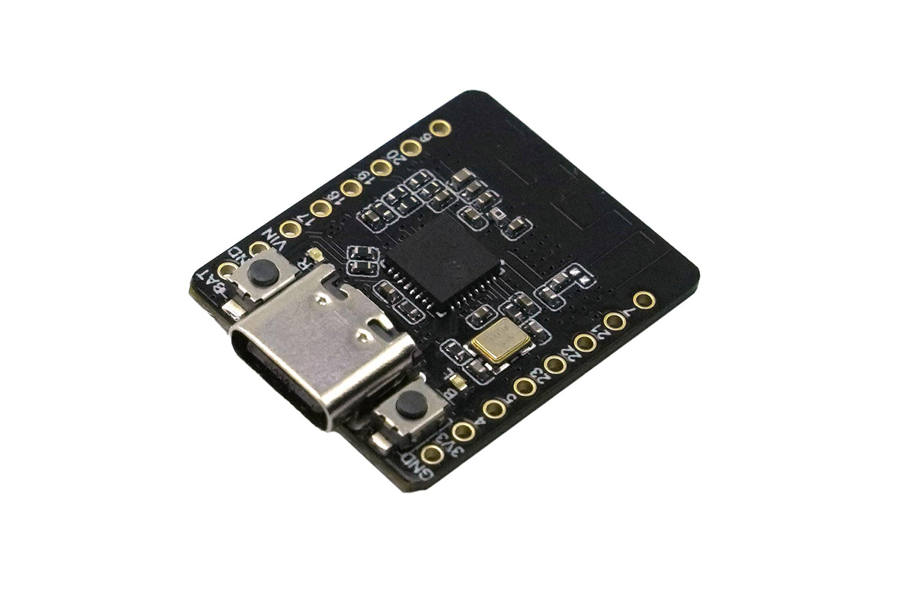
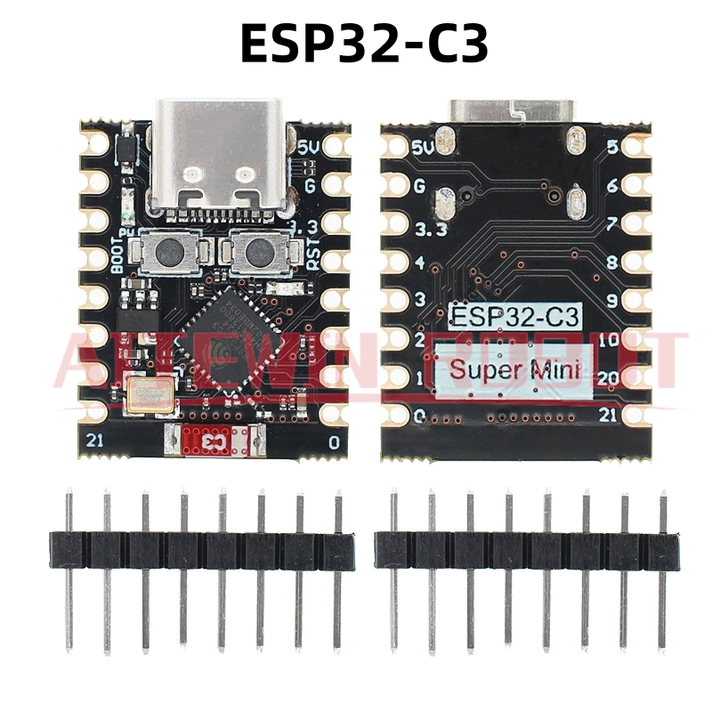
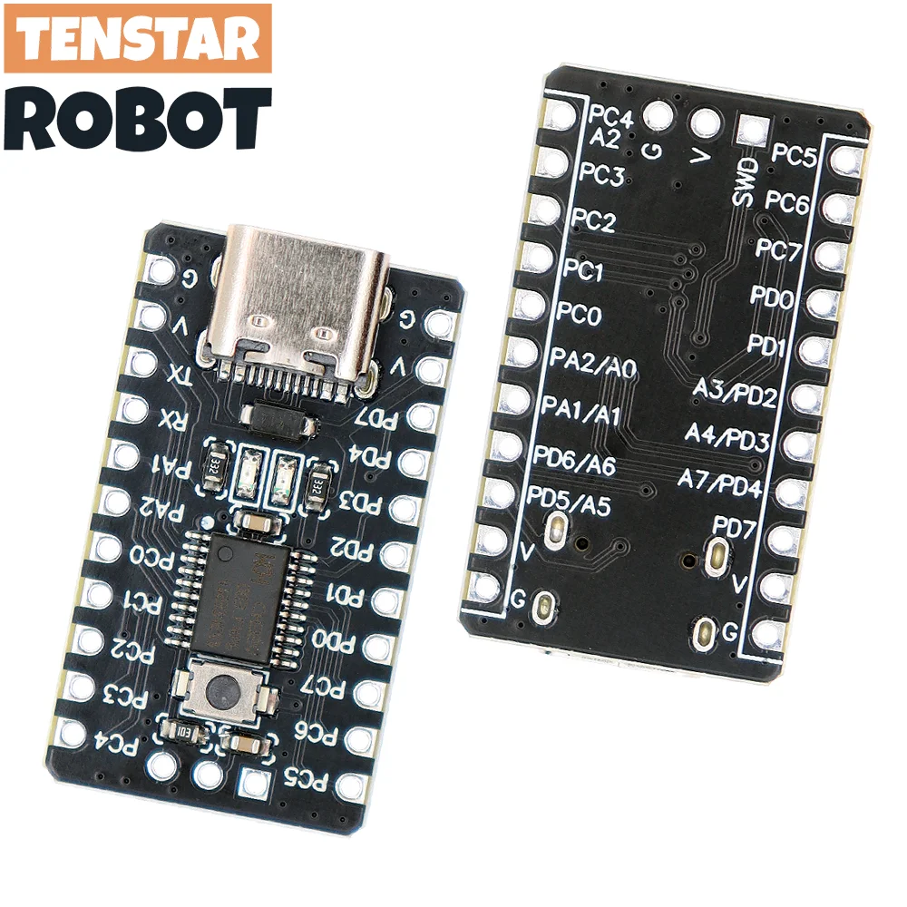
Software: MicroPython vs PlatformIO
MicroPython
- Real-time compilation. Edit, save, run. No build step.
- Ideal for rapid prototyping and classroom workshops.
- Higher power draw. The interpreter never sleeps as efficiently as compiled C.
- Smaller library ecosystem. Many sensor drivers need manual porting.
- Timing-critical code (I2S, precise PWM) is harder to get right.
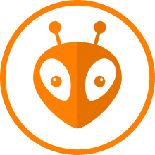
PlatformIO
- Compiled C/C++. Maximum performance, minimum power draw.
- Massive library ecosystem. OTA, deep sleep, precise timing out of the box.
- CLI is outstanding. One command to build, flash, and monitor any board.
- Longer compile cycles. A full rebuild on a large project can take minutes.
- Steeper initial setup (toolchains, board definitions, platformio.ini).
PlatformIO's CLI is the real superpower.
It is language-agnostic. Shell out to pio run -t upload from Python, Node, Electron, or
anything else, and you have a custom flash toolchain in an afternoon.
The uploader below is exactly that: a thin web GUI over the CLI.
GestoLumina & UMD Journey
- GeLu 1: Felt Sound research to wireless ESP32-S3 and TensorFlow Lite gesture ML.
- GeLu 2 to 3: Iterative wearables, custom PCBs, and Bambu Lab rapid enclosures.
- Haptic Gloves: Direct tactile feedback integrated into the knuckles.
- GeLu 3+ Insight: Realized wearables are deeply flawed due to diverse body sizes.
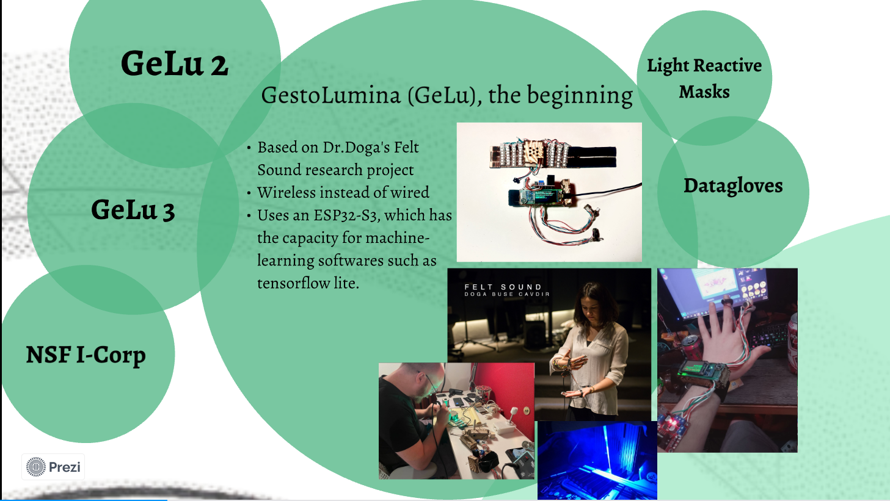
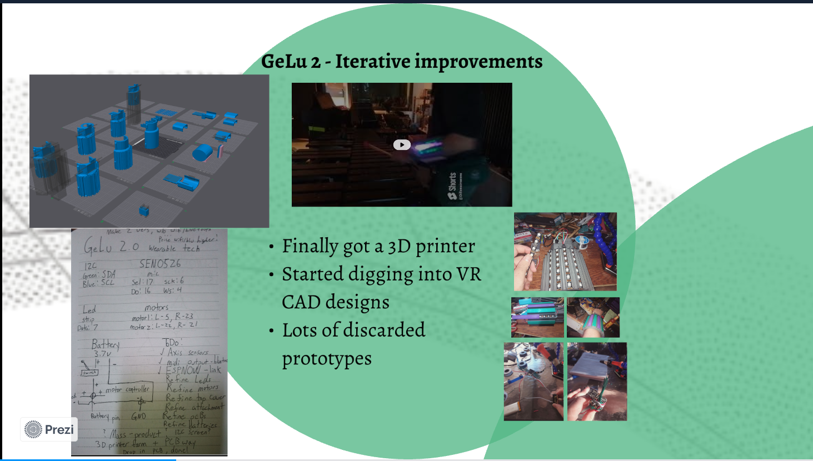
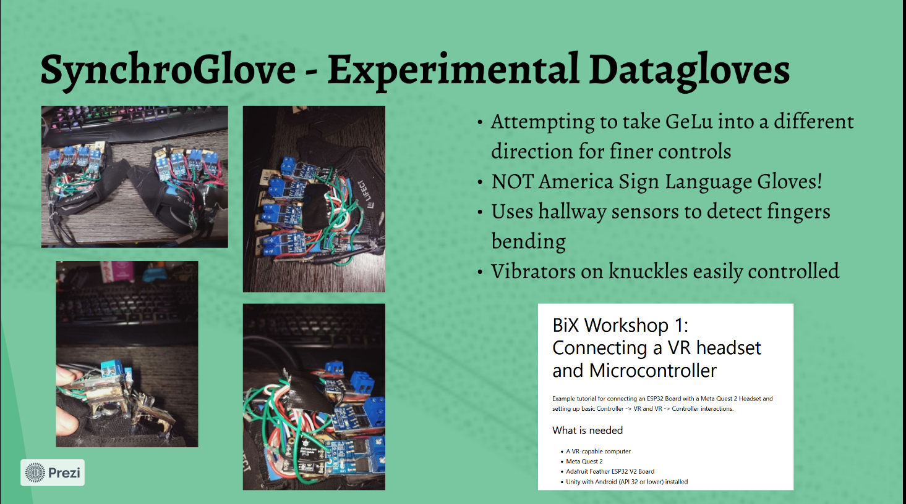
Mechanoreceptors: How We Feel
- Pacinian Corpuscles: high-frequency vibrations (200 to 300 Hz), LRAs and transducers.
- Meissner Corpuscles: low-frequency vibrations or slip (30 to 50 Hz), ERM buzzers.
- Merkel Discs and Ruffini Endings: static pressure and stretch, servos and solenoids.
Actuator Modality 1: Solenoids & Servos
- Merkel and Ruffini receptors respond to physical pressure and impact.
- Solenoids: high-impact sharp taps and clicks, excellent UI confirmations.
- Servos: steady, continuous pressure patterns and stretch sensations.
- Pros: structural realism. Cons: heavy, bulky, power-hungry.
Actuator Modality 2: ERMs & LRAs
- ERM: asymmetric weight on DC motor. Pulse forward-reverse for sharp snaps, not 100% buzz.
- LRA: mass on spring, crisp clicks at resonant frequency.
- Resonant Frequency: driving off-resonance still vibrates, but wastes watts as heat instead of motion.
How Vibration Motors Work
- Wire wrapped around a coil on a shaft, surrounded by magnets or more wire windings.
- Current through the coil pushes the shaft against magnetic fields.
- ERM: offset mass spins and throws the whole motor off balance.
- LRA: mass shuttles back and forth on a spring at a tuned frequency.
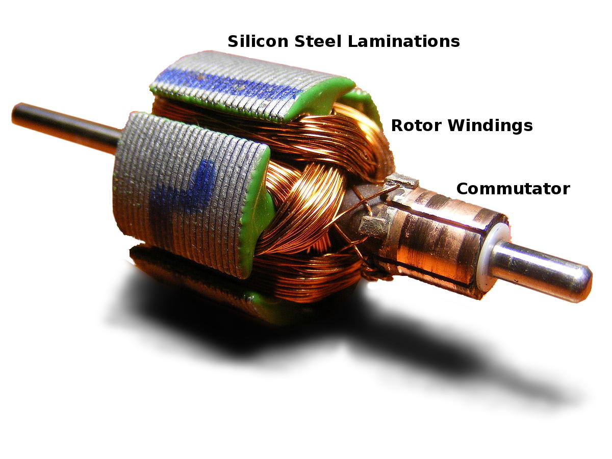
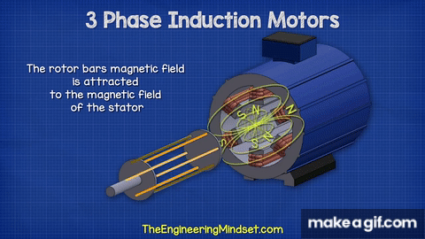
How Motors Are Made
- Brushed: coil on the rotor, magnets in the housing. Carbon brushes carry current to the spinning coil through a commutator. Simple, cheap, wears out.
- Brushless (BLDC): magnets on the rotor, coils in the housing. An ESC switches coil phases electronically. No brushes to wear, but needs a driver IC.
- The principle is the same: current through wire creates a magnetic field that pushes against another magnetic field, whether from permanent magnets or more wire windings.
- PCB motors: coils etched directly onto a circuit board. Flat, ultra-thin, no mechanical winding. Limited torque, but ideal for coin-style haptic actuators.
- Demagnetization: permanent magnets lose strength when heated past their Curie threshold. Ferrite starts fading at 80C. Neodymium handles more but is not immune.
- In a closed wearable with no airflow, continuous duty can reach those temperatures in minutes.
- Once demagnetized, the motor is permanently weaker. Cooling does not restore the field.
- Takeaway: duty-cycle limits and thermal monitoring are not optional for wearable haptics.
Actuator Modality 3: Advanced Modalities
| Actuator | The Catch |
|---|---|
|
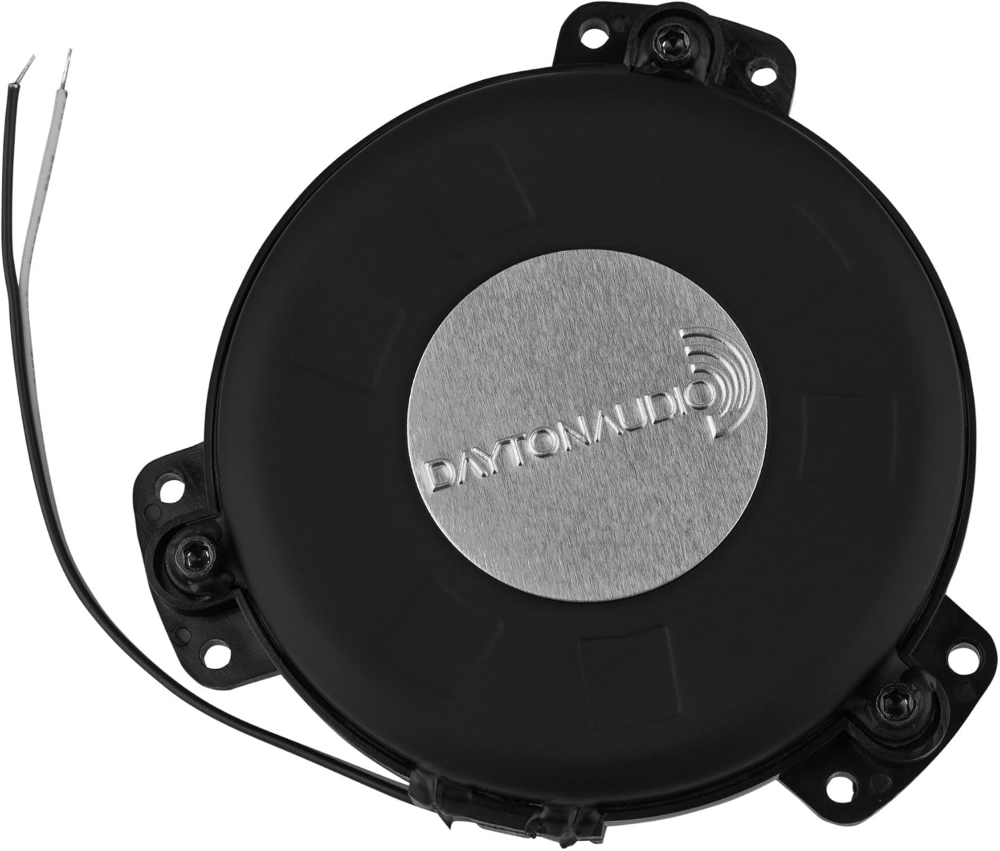 Mini Bass Shaker (8 Ohm) |
Requires AC audio power. DC offset or clipping causes overheating and self-destruction. |
|
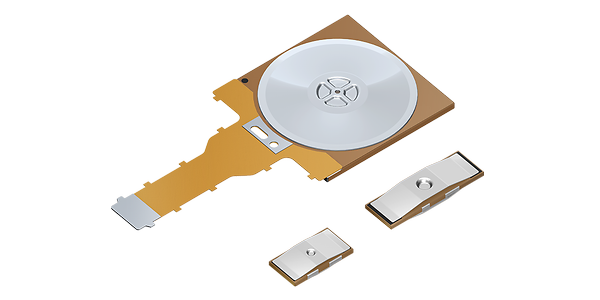 Piezoelectric Actuators |
60V to 150V+ drive, specialized boost converters. Fragile to bending stress. |
|
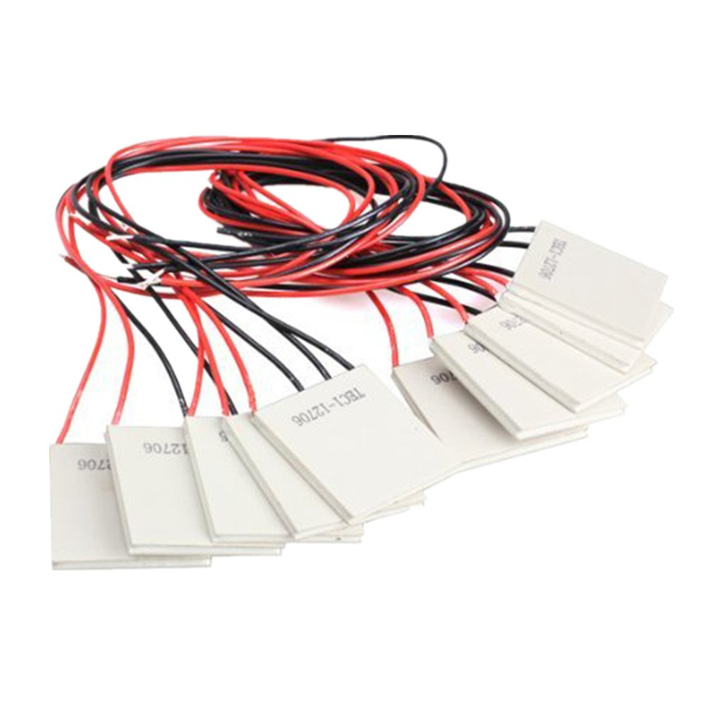 Thermal (Peltier) |
12V 5.8A, massive heat sinks required or instant burnout. |
|
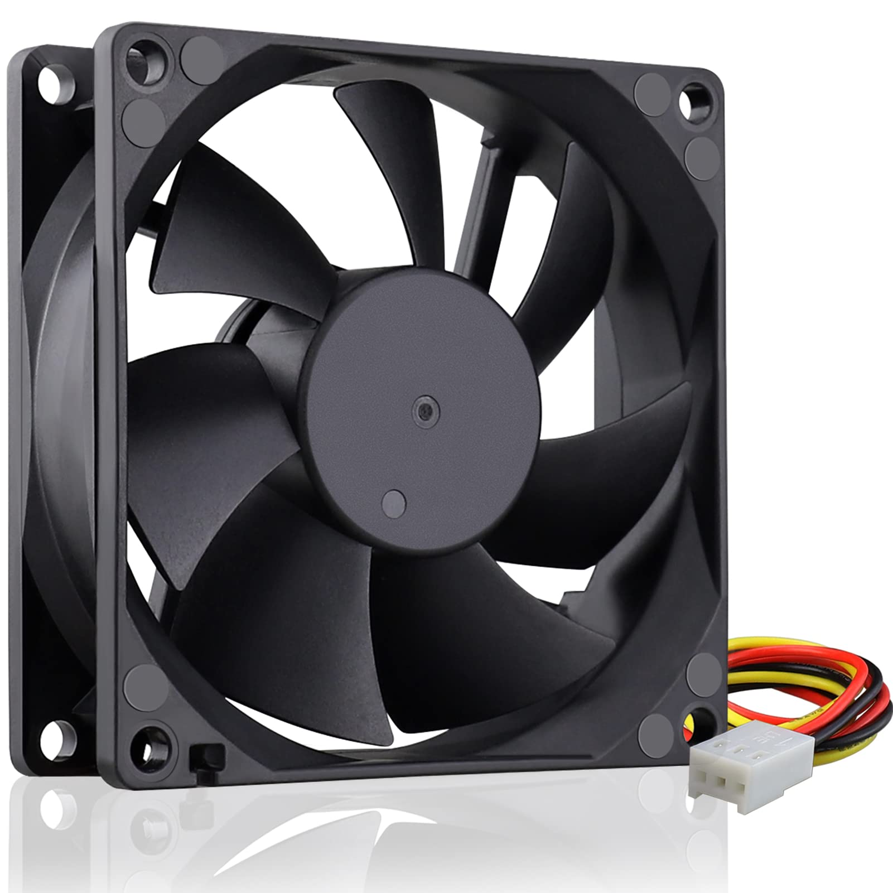 Fans / Air Haptics |
Deafeningly loud when pushed to simulate strong wind. |
Haptic Circuits: MOSFETs & H-Bridges
- GPIO pins output control signals, not high power.
- MOSFETs: single direction for ERMs, LRAs, solenoids, Peltier.
- H-Bridges: dual direction for active braking and dual-polarity actuators.
- PWM maps frequency and amplitude to duty cycle for haptic intensity.
Power Delivery: USB-C PD Decoy
- Heavy solenoids, Peltier plates, and transducers need more than 5V USB.
- PD Decoy negotiates 9V, 12V, 15V, or 20V directly from USB-C chargers.
- Configurable via DIP switches, less than one dollar each.
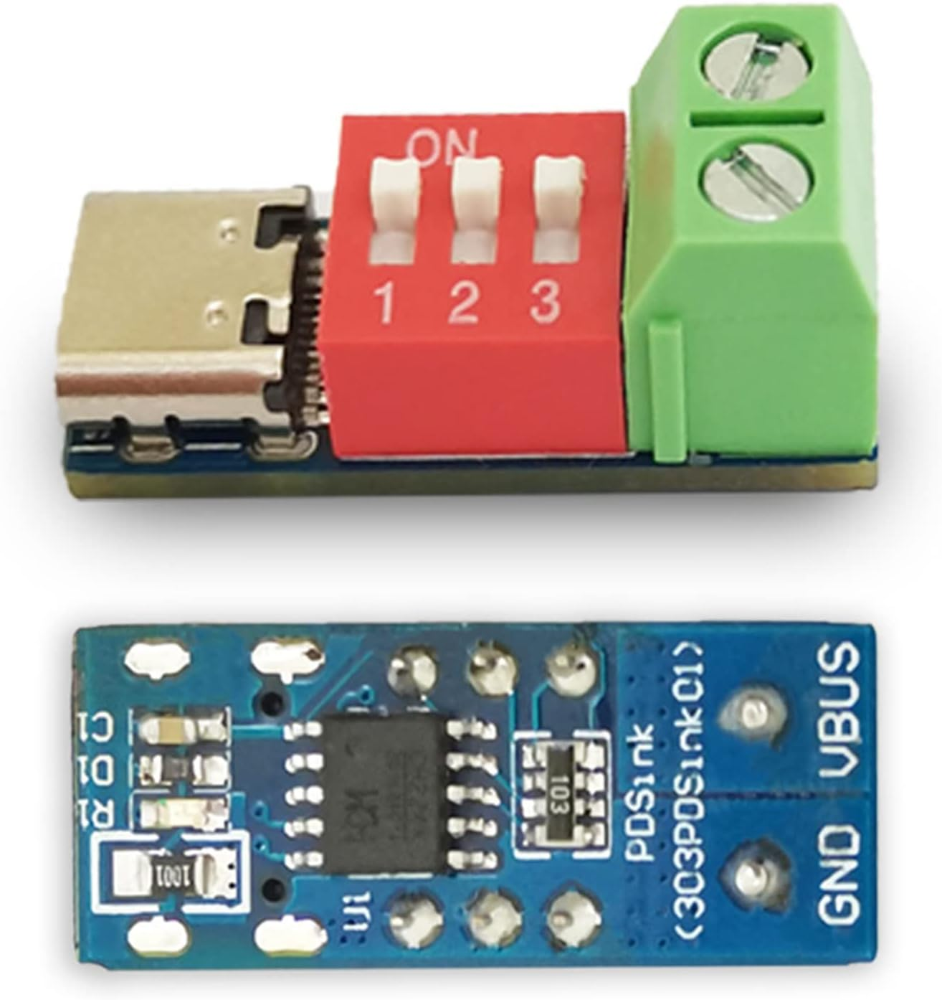
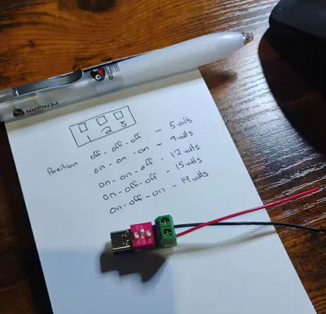
Free yourself from the tyranny of batteries!
Digital Signal Processing: FFT & Smoothing
- FFT separates audio into frequency bins. Map bass to body transducers, mids to hand LRAs.
- Normalize and smooth: raw signals are jittery, use delta smoothing in non-blocking loops.
- Rule of thumb: keep response times under 15ms with
millis()scheduling. - Red, yellow, and blue motors below react to bass, mid, and treble bins in real time.
Audio-Reactive Sensing: MAX4466 & Telemetry
- Low-Latency Transduction: The MAX4466 electret microphone module provides instant analog envelope extraction without I2S protocol overhead.
- 3-Wire Workshop Interface: 3-pin hookup designed for rapid assembly on all Teardown Workshop Kits.
- Direct ADC Pinout: Connect
3.3VandGNDrails, then route the signalOUTpin directly toGPIO 6. - Single-Step Provisioning: In the Haxel device registry, select Analog
Mic on
Pin 6, hit save, and live telemetry stream begins immediately.
| VCC | 3.3V Power Rail |
| GND | Common Ground Reference |
| OUT | GPIO 6 (Analog ADC Pin) |
AUDIO-REACTIVE TELEMETRY
Frequency Band Partitioning
Maps acoustic audio frequencies into physical mechanical pulses for sensory substitution. Drag pins to resize frequency bands.
Live Fleet Command
1. Flash a Mesh Master build on the leader Beetle (PlatformIO env
c3WIFILED_MASTER).2. Leader broadcasts WiFi SoftAP at
192.168.4.1. Join that network on the laptop WiFi radio
only.3. Run
present.bat on the laptop. Slides load from localhost.4. Fleet commands go over HTTP
POST /json/fleet (proxied to the hub). Live telemetry uses
WebSocket ws://192.168.4.1/ws.5. Followers receive haptics over ESP-NOW, not WiFi. Bluetooth is for single-device mode via
bluetooth.html.
| GPIO 6 | MOSFET gate (motor PWM output) |
| GPIO 5 | WS2812 LED strip (optional status) |
| I2S BCLK / WS / SD | INMP441 mic (assign in Haxel portal after first boot) |
| Motor + | MOSFET drain. Motor GND to common ground. |
Immersive Accessibility & UMD
- Universal Music Design builds shared performance spaces for hearing and Deaf artists.
- Sensory substitution: acoustic performance becomes vibro-tactile and visual signals.
- Audio reactive masks: real-time light pulses and frequency-mapped haptic straps.
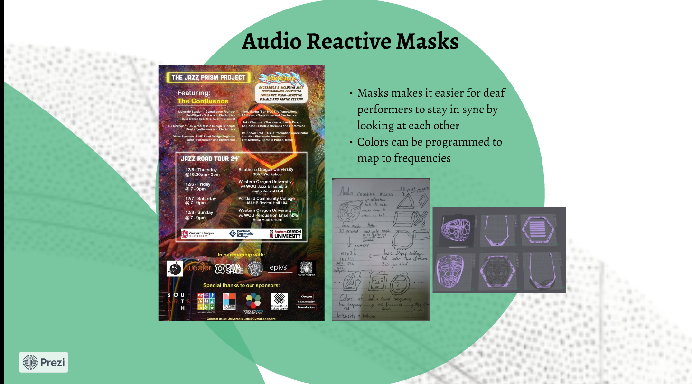
Existing Wearables: Success vs. Failure
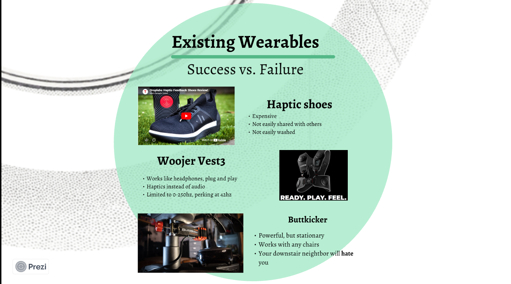
Haptic Shoes
Expensive, not easily shared, not easily washed.Woojer Vest
Plug and play like headphones, but limited to 0 to 250 Hz, peaking near 42 Hz.Buttkicker
Powerful but stationary. Works with any chair. Your downstairs neighbor will hate you.Responsibility & Safe Design
- HAVS: prolonged strong vibrations cause permanent nerve and vessel damage.
- Strobing effects can trigger seizures. Stay outside photosensitive frequency zones.
- Never place active haptics on eyeballs (immune-privileged area).
- Material safety: avoid nickel, latex, and cheap adhesives on wearable straps.
SAFETY FIRST: software timers, physical guards, and fleet E-stop before every demo.
Thermal reality: motors heat up faster than speakers. A small ERM or LRA in a closed wearable can hit painful temperatures in minutes. Speakers shed heat through the cone and enclosure. Motors need airflow, duty-cycle limits, or heatsinks to go further without burning skin or demagnetizing the coil.
Petting Zoo Stations & Q&A
- Walk the DreamTENT stations. Each has a unique actuator profile and QR code.
- Scan QR codes for schematics, source code, and BOMs.
- Try the Smartphone Haptics miniproject (Android Chrome, Web Vibration API).
- GitHub: DillonSimeone/Website, Haxel workshop files.
Smartphone Haptics (Android)
Thank You!